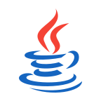

Go
Combina la eficiencia y rendimiento de lenguajes como C con la simplicidad y productividad de lenguajes modernos
L a posicion en el ranking de stack overflow es 11
Java
Java es un lenguaje de programación ampliamente utilizado para codificar aplicaciones web.
La posicion en el ranking the overflow es 8
C++
La intención de su creación fue extender al lenguaje de programación C y añadir mecanismos que permiten la manipulación de objetos.
La posición en el ranking de stack overflow es 10

JAVA SCRIPT
JavaScript es una de las tecnologías funadmentales de la WWW, junto con HTML y CSS.
La posición en el ranking de stack overflow es 1.

Swift
Es un lenguaje multiparadigma(orientado a objetos, funcional, genérico) creado para desarrollar software en plataformas Apple: iOS, macOS, tvOS, watchOS, en incluso visionOS
La posición en el ranking de stack overflow es 16.
TypeScript
TypeScript es un lenguaje de programación de codigo abierto, lanzado en 2012 por microsoft. Está diseñado para desarrollar aplicaciones en el lado del cliente y del servidor.
La posición en el ranking de stack overflow es 6.